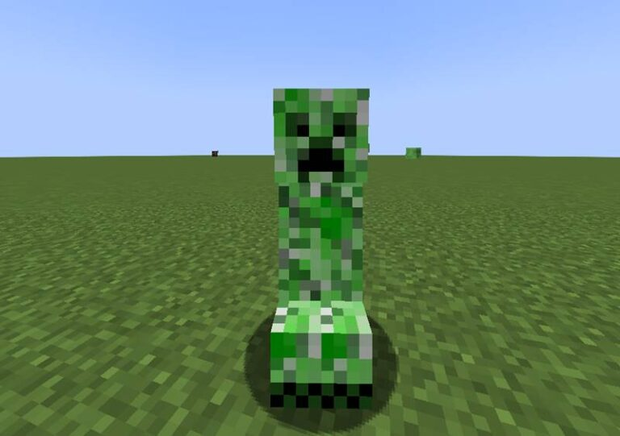

1. マインクラフトとは？
世界中で人気のサンドボックスゲーム。ブロックでできた世界で、建築・冒険・生活を自由に楽しめます。
2. サバイバルモードとは？
資源を集め、自分で道具や家を作り、食料を確保しながらモンスターを避けて生き延びるモードです。
3. サバイバルモードの進め方
- 序盤： 木を切り、道具を作り、仮の家を建てる。
- 中盤： 石・鉄を集めて装備を強化、洞窟探検や村の探索。
- 後半： ダイヤモンドを手に入れてネザー・エンドへ進む。
4. パソコン版の基本操作（Java Edition）
| 操作 | キー | 説明 |
|---|---|---|
| 前に進む | W | 基本の移動 |
| ジャンプ | スペース | 段差を登る |
| しゃがむ | Shift | 落下防止・静かに動く |
| ダッシュ | W 2回 / Ctrl | 素早く移動 |
| 攻撃・壊す | 左クリック | ブロックや敵を攻撃 |
| 置く・開く | 右クリック | ブロック設置、ドアを開ける |
| 持ち物 | E | インベントリ表示 |
| ホットバー切り替え | 1〜9 | 持つアイテム変更 |
| メニュー | Esc | 一時停止・設定変更 |
クリーパーに注意！
クリーパーは近づくと爆発する危険なモブです。静かに近づいてくるので、こまめに周囲を確認しましょう！
5. 効率よく進めるコツ
- ベッドを早めに作って復活地点を確保
- 松明を用意してモンスター対策
- 食料は畑や動物で自給自足
- 村を探してアイテムを入手・交易
- ダイヤで装備強化し、ネザー・エンドに挑む
6. まとめ
マインクラフトは自由に遊べて学べるゲームです。サバイバルモードでは自分で考え、行動して、工夫しながら強くなっていく楽しさを体験できます！